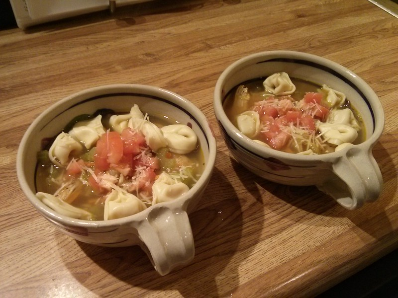

Index
Simple Tortellini Soup

Ingredients
- 2 (14.5 ounce) cans chicken broth
- 1 (16 ounce) package cheese tortellini
- 1 (14.5 ounce) can Italian-style diced tomatoes
- 1 (15.5 ounce) can cannellini beans, rinsed and drained
- 1/2 zucchini, sliced
- 1 tablespoon red wine vinaigrette
- 1 teaspoon basil
- ground black pepper to taste
- 1/4 cup grated Parmesan cheese, or to taste
Steps
- Gather the ingredients.
- Bring chicken broth to a boil in a large pot; cook tortellini in boiling broth until tender, about 6 minutes.
- Stir tomatoes, beans, zucchini, red wine vinaigrette, basil, and black pepper into the broth; cook until the zucchini is tender, about 6 minutes more.
- Top with Parmesan cheese to serve.